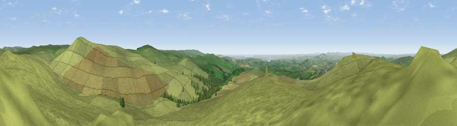

Great Staple Tor
#2800 in England · top 4% of its area beats it · near Peter TavyWhere it is
The exact computed spot (SX 54275 75988). Click the marker for map links.
The view, rendered

A 360° render of this exact spot computed from the terrain model, tree cover and land cover — summer colours, afternoon light, calibrated against photographs of famous viewpoints. Real trees, hedges and buildings will differ in detail.
The panorama
Grey silhouette: terrain skyline in each direction (720 bearings, Earth curvature and refraction included). Dashed green: skyline with trees (+15 m) and buildings (+8 m) as obstacles. Blue strip: how far the ground is visible on each bearing.
Where the view opens
Wedge length = distance to the farthest visible ground on that bearing (vegetation-aware). Rings at 10, 25 and 50 km.
What fills the view
95% grassland · 4% woodland ·
Angular shares of the visible panorama (visual magnitude), not map area. Landscape diversity 0.11 (0–1 Shannon).
Key numbers
More beautiful places nearby
The staircase of upgrades: each row has a higher view potential than everything closer. Driving times are estimates from straight-line distance, calibrated against real road routing — check an actual route before setting out.
| Place | Direction | Drive | Score |
|---|---|---|---|
| Cox Tor | W · 1 km | ~4 min | 75.9 |
| Viewpoint near Princetown | ENE · 2 km | ~6 min | 77.0 |
| Sharpitor | SSE · 6 km | ~13 min | 77.4 |
| Viewpoint near Dousland | SSE · 6 km | ~13 min | 81.0 |
| Viewpoint near Lee Moor | S · 13 km | ~24 min | 82.7 |
| Viewpoint near Downderry | SW · 30 km | ~47 min | 83.5 |
| Viewpoint near Stokeinteignhead | E · 39 km | ~58 min | 84.1 |
| Viewpoint near Hope | SSE · 40 km | ~59 min | 84.4 |
50.56542, -4.05898 · source: osm peak · position refined by local search. Computed location — check access rights before visiting.